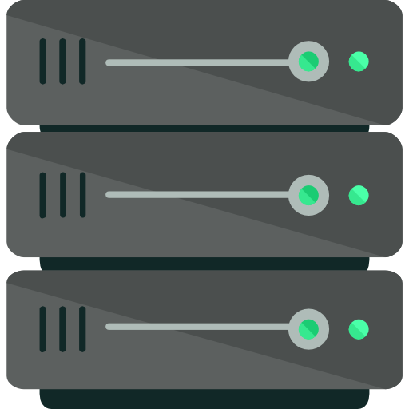

Server Part

Node.js와 Express를 활용한 HTTP 서버 제작을 학습합니다.
다양한 클라이언트와 소통하며 정보를 주고받는 방법을 학습합니다.
서버는 분산된 클라이언트 간에 정보를 동기화하고 유지하는 역할을 합니다.
웹, 모바앨 앱 등 클라이언트의 종류에 관계없이 데이터를 전달하기 위해 표준화된 요청 방식을 사용합니다.
사용자와의 상호작용 전반을 담당하므로 항상 데이터를 전송할 수 있도록 가용성을 유지하는 것이 중요합니다.
Curriculum

Vision
-
성장
-
혁신
-
검증